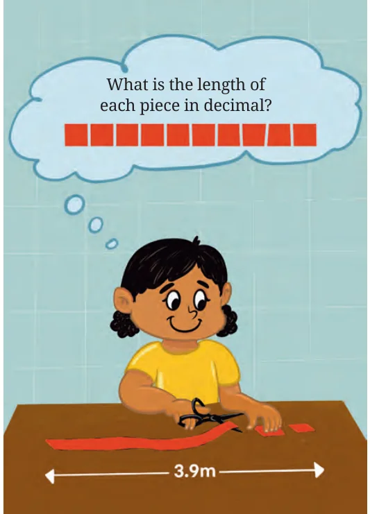
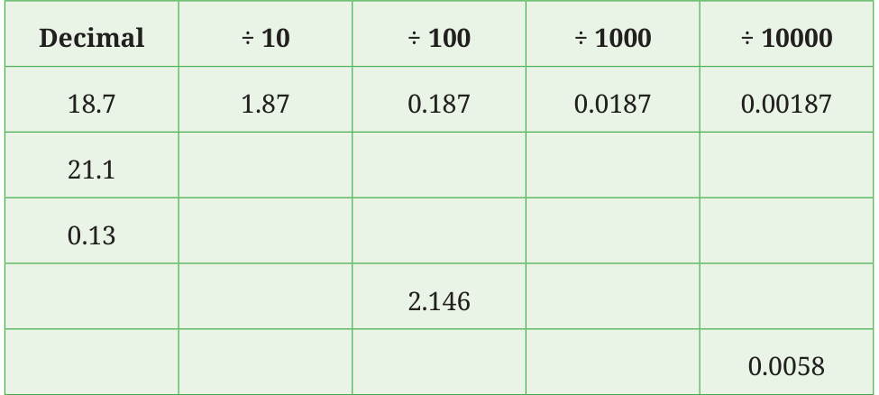
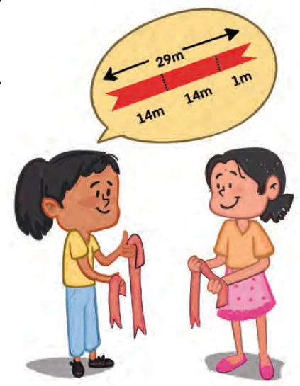

Example 6: Anuja has a 3.9 m length of ribbon and she wants to cut it into 10 equal pieces. What is the length of each piece in decimal? Since there are 10 pieces, we can find the length of each piece by dividing 3.9 by 10.
So, what is \(3.9 \div 10\)?
Let’s convert 3.9 into fraction \(3.9 = \frac{39}{10}\) . Hence, \(3.9 \div 10\) is the same as
dividing \(\frac{39}{10}\) by 10.
Recall that, dividing a fraction by a divisor is the same as multiplying the fraction by the reciprocal of the divisor. The reciprocal of 10 is \(\frac{1}{10}\) .
So, \(\frac{39}{10} \div 10 = \frac{39}{10} \times \frac{1}{10} = \frac{39}{100} = 0.39\).
Thus, the length of each piece of ribbon is 0.39 m. What is the length of each piece if the ribbon is cut into 100 equal pieces?
\(3.9 \div 100 = \frac{39}{10} \times \frac{1}{100} = \frac{39}{1000} = 0.039\).
When the ribbon is cut into 100 equal pieces, the length of each piece is 0.039 m.
What is 0.039 m in centimetres and millimetres? By looking at these divisions, we can frame a simple rule for dividing decimals by 1, 10, 100, 1000, and so on. When we divide a decimal by 1, 10, 100, 1000, and so on, we can just move the decimal point to the left by as many places as there are zeroes in the divisor!

Example 7: Neenu has 29 metres of red ribbon and wants to share it equally with Anu. What is the length of ribbon that each of them will get? Since the ribbon needs to be divided into two equal parts, each girl will get a piece of

\(29 \div 2\) metres.
If each of them gets 14 m, then 1 m remains. If we divide 1 m among the two, each will get another \(\frac{1}{2} m\). How do we convert \(\frac{1}{2}\) into a decimal? It is easy to express a fraction as a decimal if the denominator is 1, 10, 100, 1000, etc. So, can we find a fraction equivalent to \(\frac{1}{2}\) with such a denominator? \(\frac{1}{2} = \frac{1 \times 5}{2 \times 5} = \frac{5}{10}\) (multiplying the numerator and denominator by 5).
We know that the fraction \(\frac{5}{10}\) can be represented as a decimal 0.5. So, each girl will get 14 m and an additional 0.5 m of ribbon. Hence, the length of ribbon each will get is \(14 + 0.5 = 14.5 m\).
Now, what if the ribbon was shared between four friends instead of 2? So, each will get \(29 \div 4 m\), that is \(\frac{29}{4} m\). Now, the denominator of the fraction is 4. To convert a fraction to a decimal, it helps if the denominator is of the form 1, 10, 100, 1000, and so on. Can we find a fraction equivalent to \(\frac{29}{4}\) with such a denominator? Is 4 a factor of 10? No. Is it a factor of 100? Yes. \(4 \times 25 = 100\). So we can get an equivalent fraction with denominator 100 by multiplying the numerator and denominator of \(\frac{29}{4}\) by 25.
\(\frac{29 \times 25}{4 \times 25} = \frac{725}{100} = 7.25\)
So each of the 4 friends will get 7.25 m of ribbon.